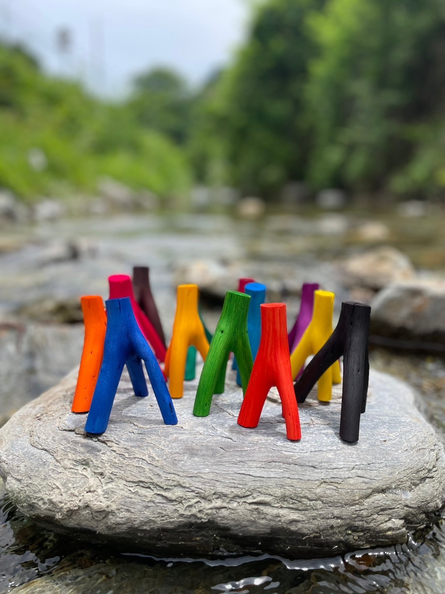

Mitsumata is our 400-year history
Mitsumata has been cherished by our ancestors since ancient times, supporting the history and beauty of Japan as traditional washi paper for over 400 years.
This product was born from a pure and simple desire: to find a way to display this magnificent traditional material in our modern, everyday spaces.

The manufacturing process begins with carefully peeling the bark from each branch by hand.
The peeled bark is actually supplied to the government as raw material for paper currency. The reality is that currently, about 90% of the Mitsumata used for Japanese banknotes is imported from Nepal.
However, we strongly believe that "the banknotes representing Japan should be made from domestic materials as much as possible." Driven by this heartfelt wish, we are deeply committed to domestic production and processing.What remains after the bark is peeled away is the beautiful inner wood.
Usually hidden during the papermaking process, we take this pure core and dye each piece by hand in vibrant colors.
